From idea to system
Translate a real problem into a measurable AI workflow — from data preparation and modeling to an interface, API, or deployable pipeline.
Initializing AI portfolio…
AI & Machine Learning Engineer · AI Engineering Student
I build end-to-end solutions across Machine Learning, Computer Vision, NLP, Generative AI, RAG, and Agentic AI — with a practical focus on evaluation, reliability, and deployment.
AI / ML ENGINEER
Artificial Intelligence Engineering · New Ismailia National University
01 · USP
More than training models — I connect engineering, experimentation, and usable AI products.
Translate a real problem into a measurable AI workflow — from data preparation and modeling to an interface, API, or deployable pipeline.
Work across classical ML, deep learning, CV, NLP and LLM systems while choosing methods based on the problem, not the trend.
Use metrics, validation, error analysis and visual diagnostics to understand what works, where it fails, and what to improve next.
02 · CAPABILITIES
A visual snapshot of the areas I actively build in — from predictive models to multimodal and agentic systems.
03 · EXPERIENCE
Recent internships and training spanning computer vision, applied AI, and agentic systems.
Building multi-agent workflows with LangChain and LangGraph, including planning, tool calling, memory, and knowledge-grounded RAG pipelines.
Developed applied AI workflows across transformer-based NLP, retrieval-augmented generation, and YOLO-based computer vision.
Built applied CV projects using pretrained architectures and YOLO, with emphasis on optimization and evaluation.
Engineered a diabetes-risk classification pipeline using preprocessing, feature engineering, stratified validation, and class-imbalance correction.
04 · PROJECTS
Selected GitHub work paired with local demo recordings from the supplied portfolio package.
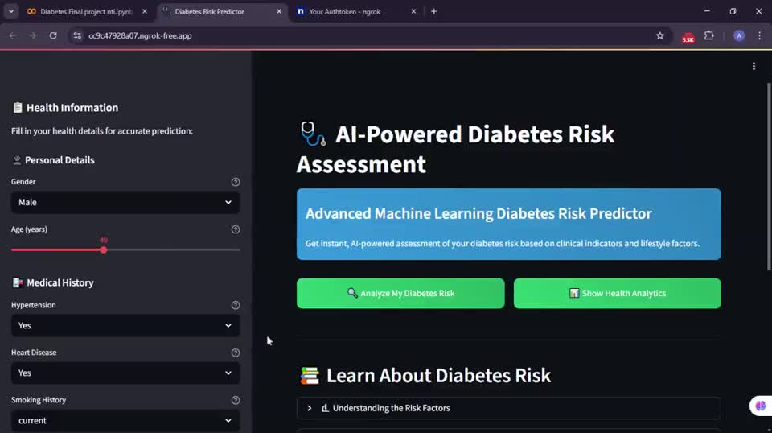
DEMOML · Healthcare
Interactive ML risk assessment with visual analytics, personalized insights, and a user-facing prediction workflow.
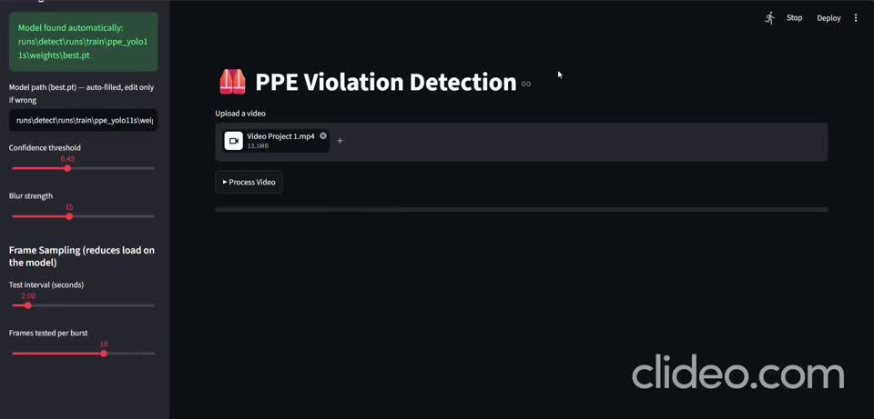
CVComputer Vision · YOLO
Real-time workplace safety monitoring that detects workers and checks required PPE compliance through YOLO-based vision.
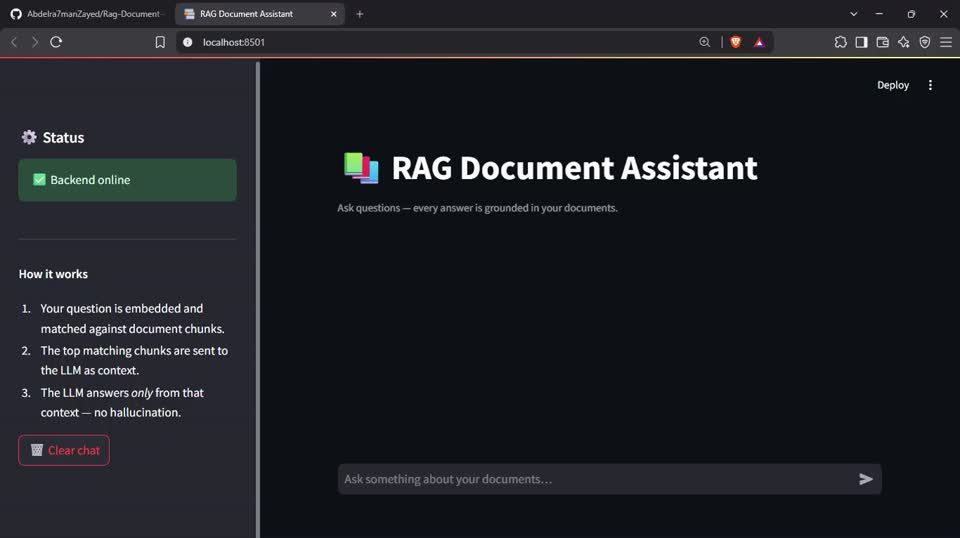
RAGGenAI · Retrieval
Grounded document question answering using retrieval, vector stores, FastAPI, Streamlit and local LLM infrastructure.
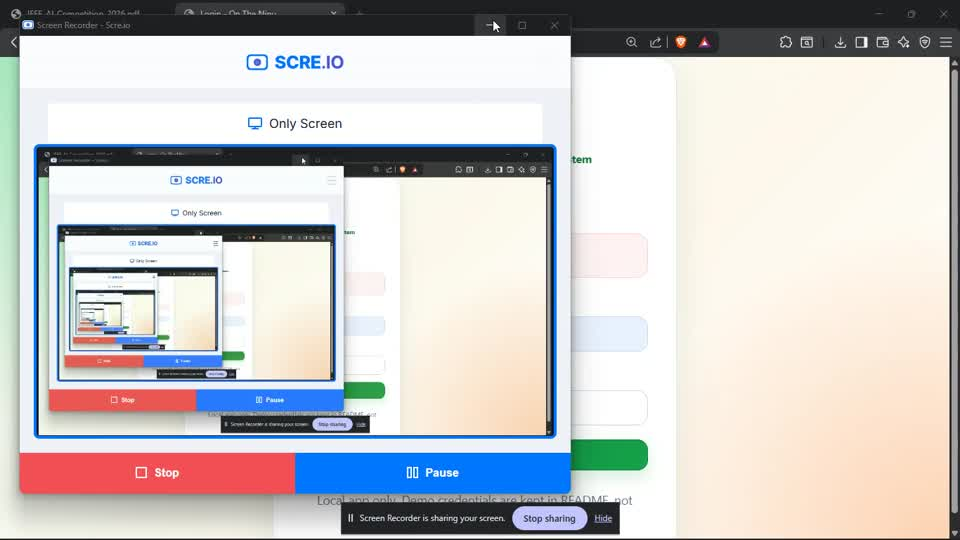
FASTAPIAI Systems · Backend
A FastAPI-powered retail operating system designed around purchases, inventory, customer loyalty and scalable business workflows.
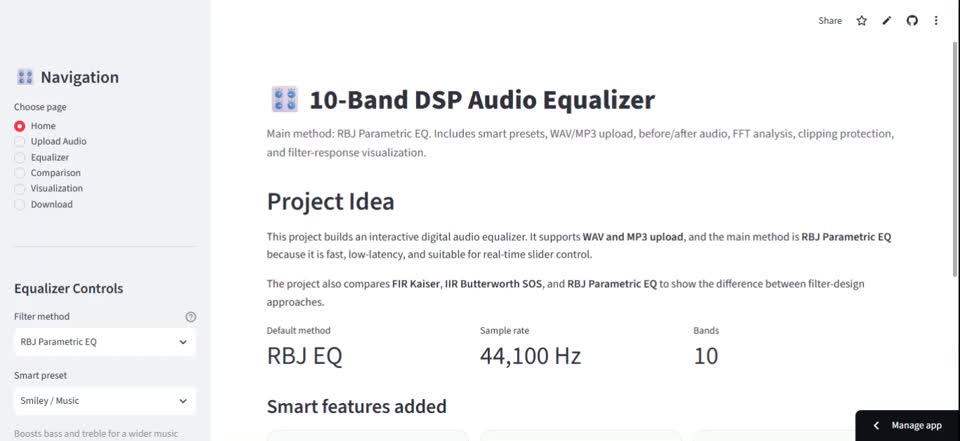
SIGNALSignal Processing · Streamlit
Interactive audio equalizer with FFT analysis and comparisons across FIR, IIR and RBJ parametric filtering.
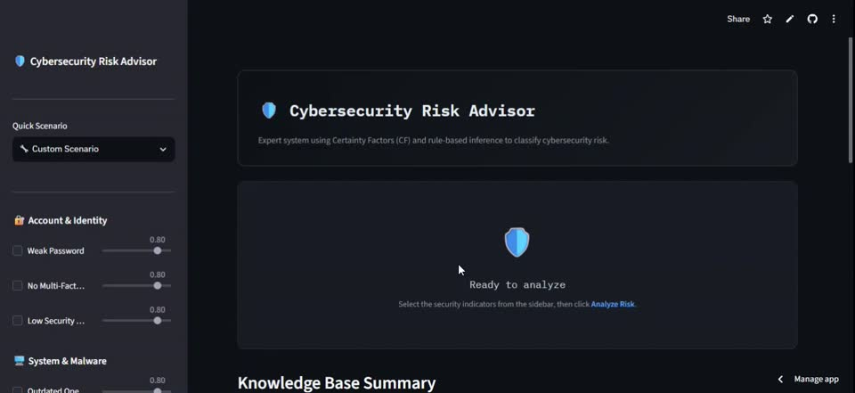
EXPERT AIKnowledge Systems
Knowledge-based expert system that helps users identify cybersecurity risks and understand the reasoning behind them.
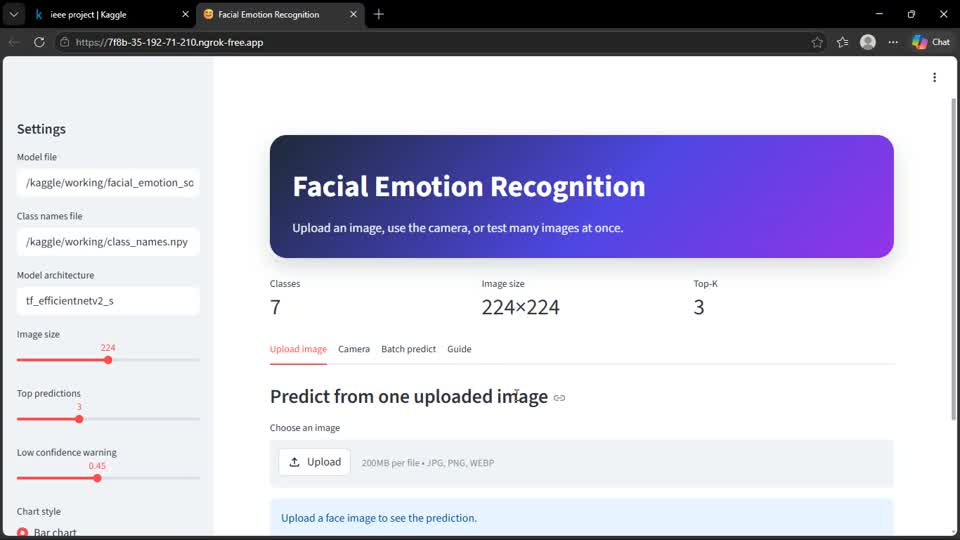
DLDeep Learning · CV
7-class CNN-based emotion recognition workflow using TensorFlow/Keras, augmentation and real-time validation monitoring.
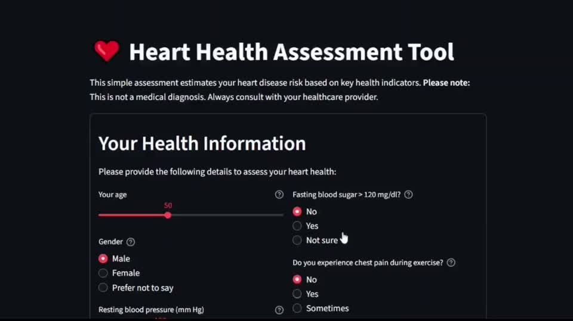
MLMachine Learning · Healthcare
End-to-end prediction pipeline covering preprocessing, PCA, feature selection and supervised / unsupervised model experimentation.
Computer Vision · Comparison
Neural-network-based crack classification with a comparison across FFNN, LSTM and CNN approaches.
05 · CERTIFICATIONS
Certificates supplied with this portfolio update, organized by provider and technical focus.
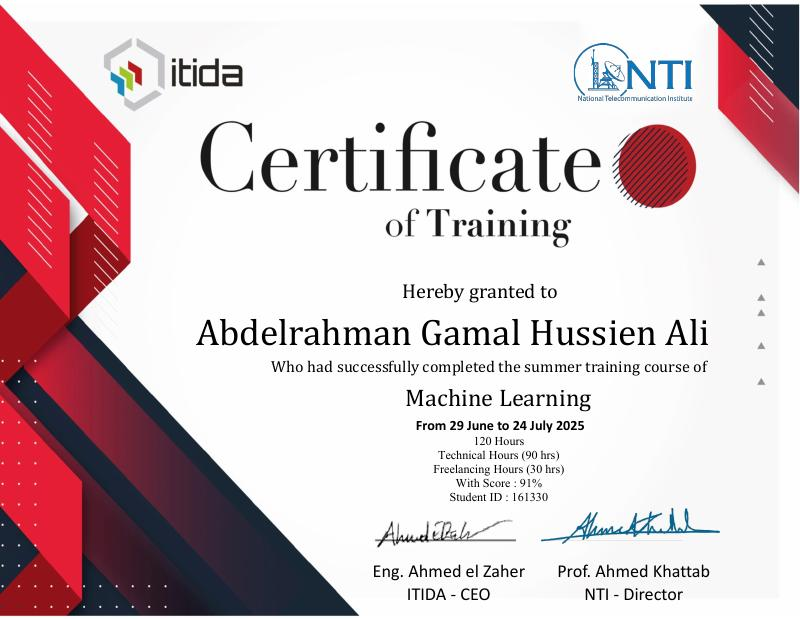
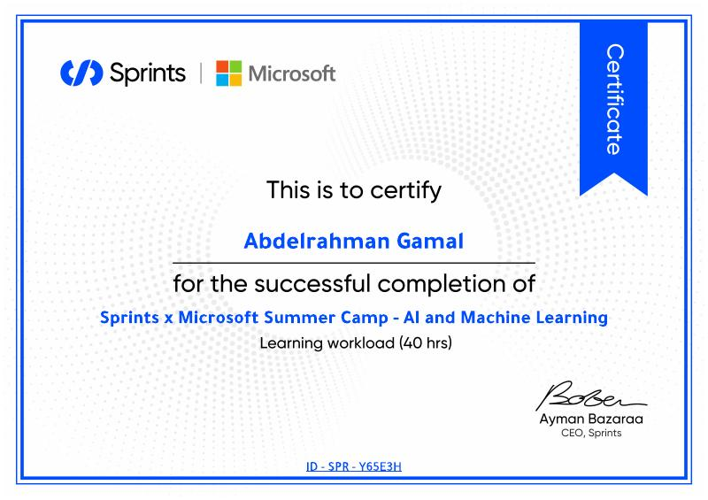
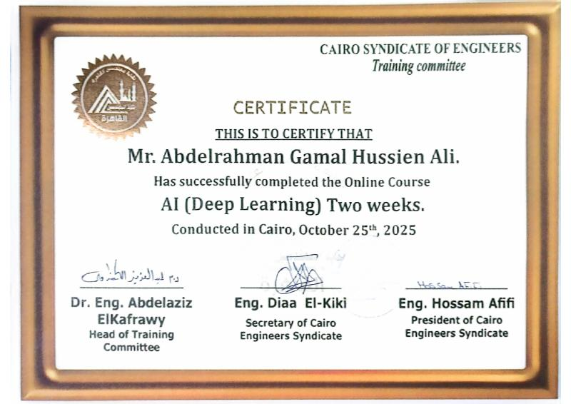
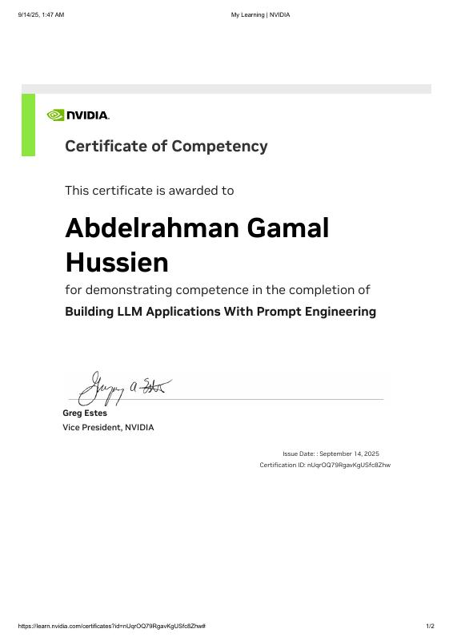
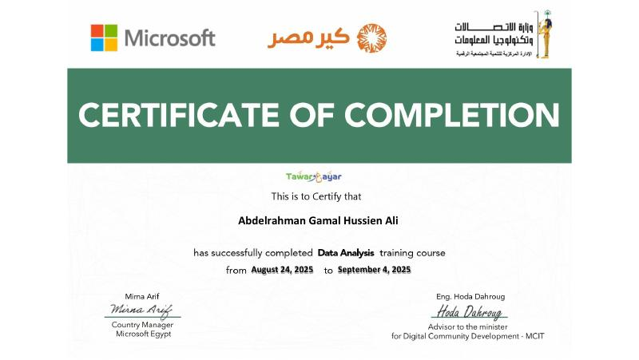
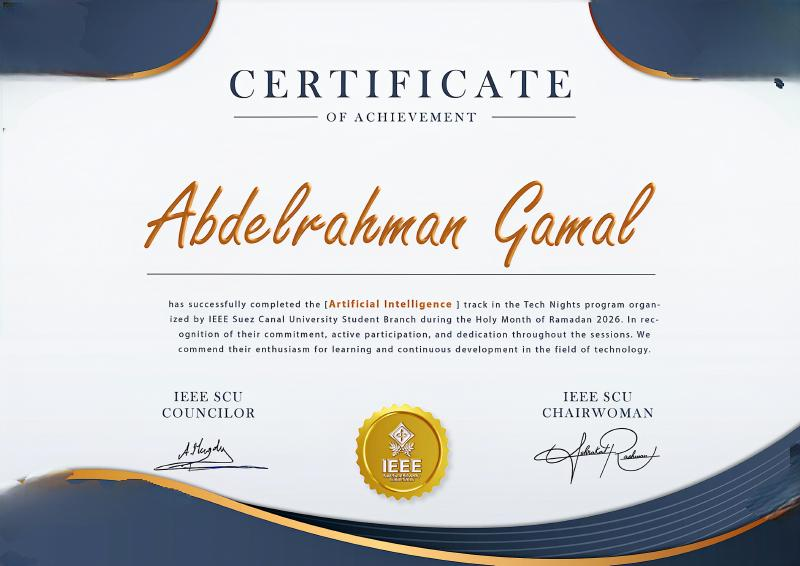
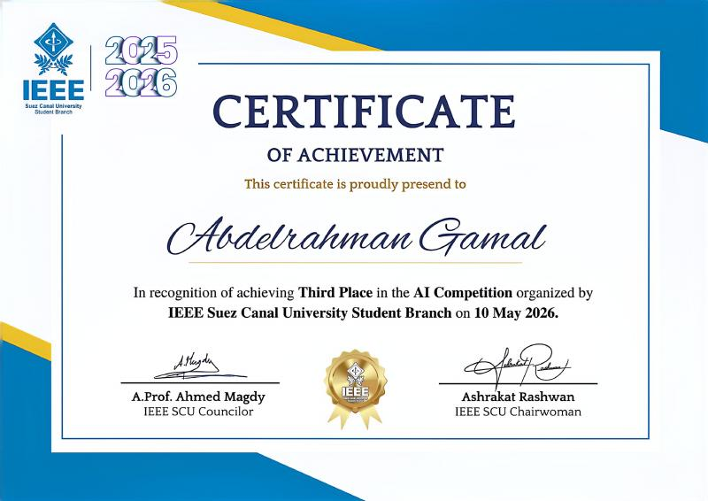
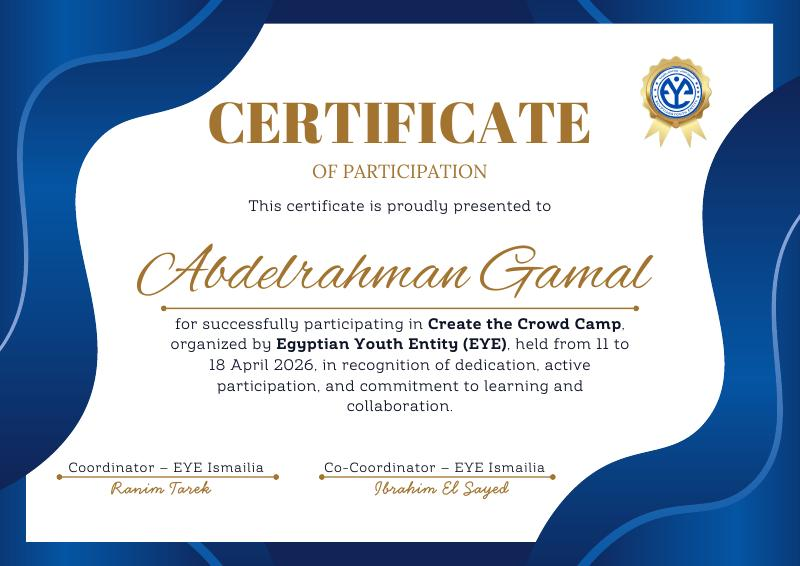
06 · RESEARCH
Co-authored work under review in solar power forecasting.
Proposed an Extreme Learning Machine (ELM) + Improved Harris Hawks Optimization (IHO) framework and benchmarked it against CatBoost, XGBoost, Transformer and standalone ELM approaches.
07 · LEADERSHIP
PRESENT
Direct AI-focused workshops, hackathons and peer-learning pathways across ML, computer vision and NLP.
PRESENT
Collaborate with organizing committees on youth-led community development and social-impact initiatives.
08 · CONTACT
Open to AI/ML internships, research collaboration, and practical intelligent-system projects.